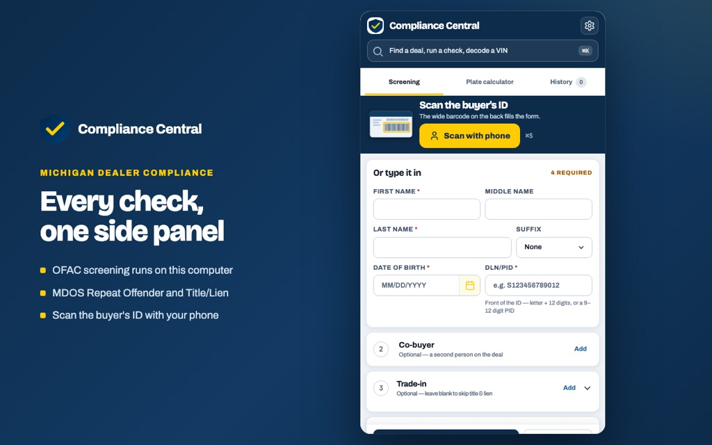
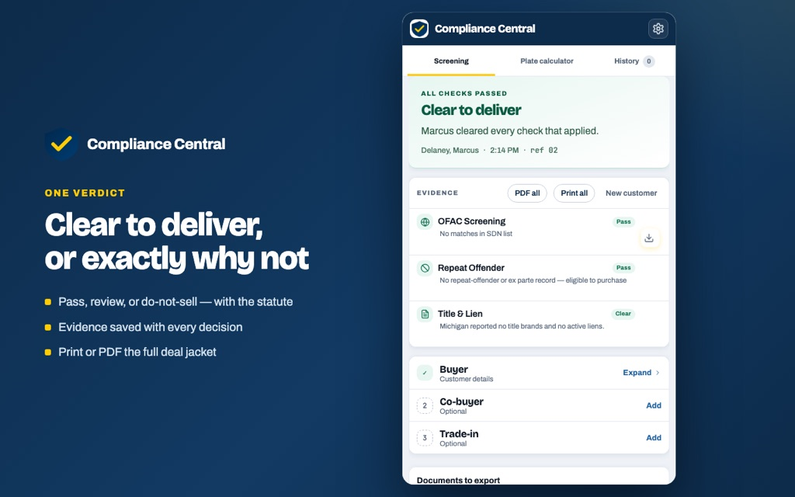
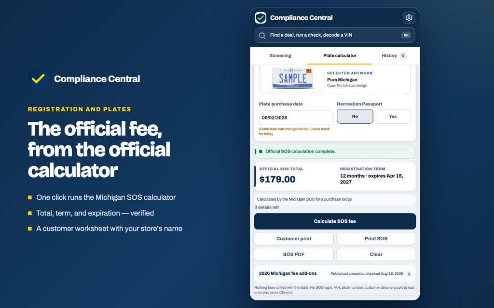
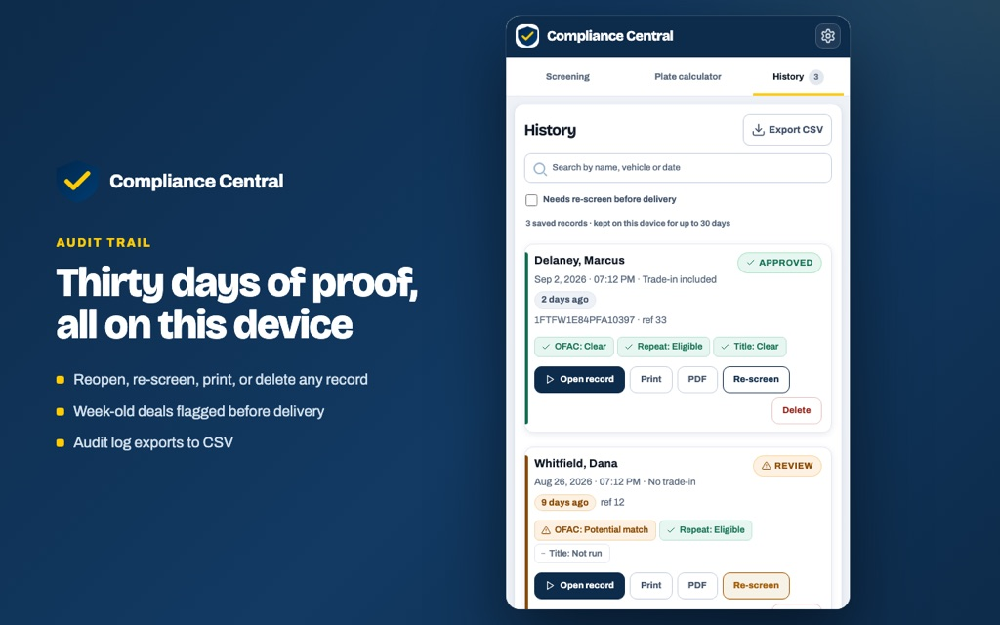
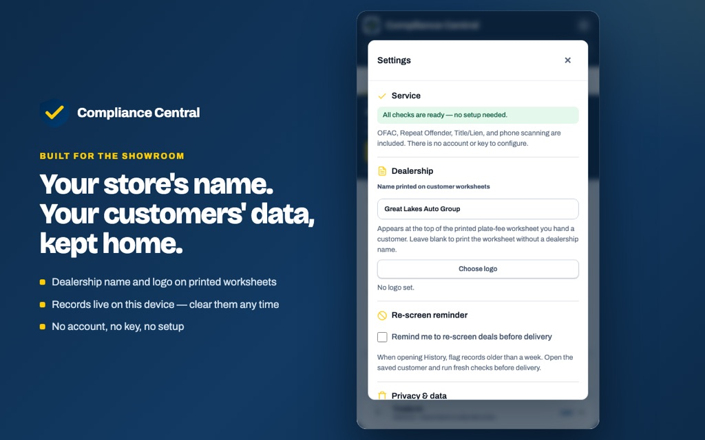

Michigan dealer compliance, all in one side panel.
Scan a driver's license or state ID with a phone, run OFAC, Repeat Offender, and Title/Lien checks, and calculate an official registration/plate estimate without leaving the deal screen.
How scanning works
- 1Open the phone scannerScan the pairing code shown in the side panel.
- 2Aim at the wide barcodeIt is second from the top on the back of the ID.
- 3Review the filled fieldsThe license image stays on the phone.
The whole deal, in the panel
Real screens from the current release — the screening workspace, the verdict, the official plate-fee calculator, the on-device audit trail, and the settings that put your store's name on every customer worksheet.





Privacy Policy
How Compliance Central handles customer and dealership data.
Effective: August 18, 2026
Data Use at a Glance
- OFAC screening stays on your device. No customer information is transmitted for an OFAC-only check.
- Repeat Offender and Title/Lien checks use our HTTPS service. The entered name, date of birth, license/ID number, and VIN when used are sent only to request the selected MDOS portal response.
- SOS Fee Quote stays in the side panel. Vehicle, fuel, commercial-use, plate, and plate-design edits happen locally. On an explicit Calculate SOS fee click, the completed vehicle and plate choices are sent to our HTTPS service, which applies them to the public Michigan SOS calculator and returns the verified fee plus an actual image of the official result page. Nothing opens on your computer. It does not access SOS credentials or cookies, and it does not file any SOS transaction.
- VIN helper is optional and explicit. A sold-vehicle VIN or partial VIN is sent to NHTSA's public vPIC decoder only after you click Decode. Supported vehicle type, body, fuel, and model-year fields are filled locally for review. Trade Title/Lien stays in the existing Trade-In workflow and is not mixed into the fee workspace.
- Phone scan images stay on the phone. Only the text fields you approve are sent to your computer in an encrypted, single-use package.
- Saved customer history is local and limited. Up to 50 working records are kept on your device for no more than 30 days so dealership staff can reopen a customer, re-screen, and reproduce prior reports. History can be cleared at any time.
1. Overview
Compliance Central ("we", "our", or "the extension") is a Chrome extension that helps Michigan automotive dealers run compliance screenings — OFAC sanctions, Repeat Offender (MDOS), and Title/Lien checks — from a browser side panel. We are committed to protecting the personal information you enter. This policy explains exactly what data the extension handles, where it goes, and what is and is not retained.
2. What Data the Extension Handles
To run a compliance check, you enter buyer and (optionally) co-buyer details: first / middle / last name, suffix, date of birth, and Michigan DLN/PID, plus an optional trade-in VIN. The optional SOS Fee Quote workspace also handles only the vehicle and plate choices needed by the public calculator, a returned fee, an actual official result-page capture, and a non-personalized official plate-design preview. This information is used only to perform the checks and quote actions you request. We do not sell it, share it with advertisers, or use it for any purpose unrelated to the extension.
- Compliance records can be reopened: submitted buyer/co-buyer fields, trade VIN, results, and captured portal evidence are saved in local extension storage for up to 30 days so authorized dealership staff can re-screen or reproduce reports.
- SOS quote data is session-only: calculator choices, returned fee, official result-page capture, plate preview, and any typed VIN stay only for the browser session. The extension never stores an SOS credential, cookie, plate number, customer name, or SOS VIN in persistent Compliance History. A user-requested print or PDF remains wherever the user chooses to save it.
- Persistent working history is device-local: each record contains the submitted customer fields, timestamp, results, and report evidence needed to reopen and reproduce the record. History is limited to 50 records and 30 days and can be cleared at any time. SOS credentials, cookies, authentication tokens, and backend keys are not stored in History.
- Files you choose to download: a PDF or CSV is saved only when you request it. Downloaded files may contain the details shown in the report and remain wherever you save them until you delete them.
- No tracking or analytics: the extension does not track your browsing, and does not use Google Analytics or any third-party advertising or analytics network.
3. Data Transmitted for MDOS Checks
The Repeat Offender and Title/Lien checks are performed by our secure backend service hosted on Fly.io, which queries the Michigan Department of State (MDOS) portal on your behalf using automated browsing.
- For these two checks only, the buyer/co-buyer name, date of birth, and DLN/PID (and the VIN for a title check) are transmitted to our backend over an encrypted HTTPS connection.
- The backend processes this data in memory to request the MDOS portal response and screenshot. Submitted customer data is not intentionally retained by the backend and is not written to its database or application log. The returned result and screenshot are saved only in the extension's device-local History so the dealership can reopen and reproduce the record.
- Like any hosted web service, Fly.io receives ordinary network request metadata. Compliance Central uses the request IP address transiently in memory for rate limiting and abuse prevention; the app does not write it to its database or application log.
- The extension includes built-in access to the backend, so these checks work without an account, API key, or setup.
4. SOS Fee Quote and VIN Helper
The SOS Fee Quote workspace is a convenience layer over the public Michigan SOS calculators; Michigan SOS remains the source of truth for the final fee and eligibility.
- The extension displays its bounded dealership form and official Michigan plate artwork locally. Clicking the selected plate opens an instant in-sidebar viewer with zoom and drag-to-pan controls, without opening a new window or the SOS website. After an explicit Calculate SOS fee action, the completed calculator fields — including the registered owner's birthdate (used by Michigan to set the expiration date) and, for a plate transfer, the plate number — are sent to the Compliance Central service, which runs the public Michigan SOS calculator and returns the fee plus an actual image of the official result page. Nothing opens on your computer, and the extension has no permission to open or read browser tabs.
- If the calculator does not produce a verified fee and page capture, the extension reports the failure and quotes nothing. It never presents an unverified number as an official fee.
- The extension does not read or send SOS credentials, cookies, authentication tokens, or account information. It does not submit a filing, issue a BFS-4, transfer a title, or complete an RD-108.
- When you explicitly use the VIN helper, the VIN goes directly from the extension to NHTSA's public vPIC service to obtain vehicle basics. The raw VIN is not kept in the decoder response, sent to SOS, or written to extension storage.
- When you explicitly use Check title/lien, a full 17-character VIN is sent to the existing MDOS backend as described above. The SOS workspace displays only a bounded live result and does not save the VIN, screenshot, or result to audit history.
5. License Scan (Optional)
The optional "Scan license with phone" feature lets you capture a customer's Michigan driver's license or state ID with your phone instead of typing. It is designed to be private:
- Scanning and parsing happen on your phone — the barcode on the back of the license is read and decoded in your phone's browser. The license image is never uploaded or transmitted.
- Only the parsed text fields (name, date of birth, and license/ID number) travel to your computer, and they are end-to-end encrypted: the desktop extension generates a one-time key that exists only inside the QR code, your phone encrypts the fields with it, and our backend merely relays an encrypted package it cannot read.
- That encrypted package is single-use, expires in about two minutes, and is deleted the moment your computer retrieves it. It is never written to a database or log.
- Once the fields autofill, they are handled exactly like manually typed data — including retention. As described in Section 2, the submitted buyer and co-buyer fields (name, date of birth, and license/ID number) are saved with the compliance record in local extension storage for up to 30 days so the deal can be reopened or re-screened, and can be cleared at any time from Settings or History. Scanning changes how the fields are entered, not how long they are kept.
6. OFAC Screening (Local Only)
OFAC sanctions screening is performed entirely on your device. The extension downloads the official SDN list directly from the U.S. Treasury OFAC Sanctions List Service and matches names locally. No customer information is sent anywhere for an OFAC check.
7. Third-Party Services
- U.S. Treasury OFAC Sanctions List Service (
sanctionslistservice.ofac.treas.gov): provides the official SDN list the extension downloads for local screening. Treasury redirects the file download to its dedicated AWS GovCloud storage host. Only the public list is downloaded — no customer data is sent. - Michigan Department of State (MDOS): the official source queried (via our backend) for Repeat Offender and Title/Lien results.
- Michigan Secretary of State public fee calculator: verifies the locally completed registration/plate choices and supplies the calculated fee and actual official result-page capture only after an explicit SOS Fee Quote action. Official plate artwork is loaded from
www.michigan.gov. The extension does not use an SOS account or access SOS credentials/cookies. - NHTSA vPIC (
vpic.nhtsa.dot.gov): receives an optional VIN or partial VIN only after you click Decode VIN and returns basic vehicle characteristics for SOS field suggestions. - Fly.io: hosts our backend service. Customer data is processed in memory and is not intentionally retained after each request; ordinary network metadata is handled as described above. For the optional license scan, the service relays only an encrypted, single-use package it cannot read.
- GitHub Pages (
techsavvyjoe.github.io): serves the static phone scan page (and this policy). The scan page performs the barcode decoding on your phone; the license image is not sent to it.
8. Permissions
The extension requests only the permissions it needs:
sidePanel— to show the compliance interface in Chrome's side panel.storage— to save preferences and bounded, device-local customer/report history.unlimitedStorage— to hold the downloaded OFAC sanctions dataset and up to 50 saved customer/report records, including state-site evidence images, for no more than 30 days.alarms— to refresh the OFAC sanctions list automatically about once per day.- Host access to
sanctionslistservice.ofac.treas.govand its dedicated AWS GovCloud file host (official OFAC list download),compliance-central-api.fly.dev(MDOS backend),dsvsesvc.sos.state.mi.us(official plate-design artwork shown next to a fee quote), andvpic.nhtsa.dot.gov(optional VIN decoding). Official published plate-gallery images load fromwww.michigan.govwithout a broad host permission.
9. Chrome Web Store Limited Use
Compliance Central's use of information received from Google APIs adheres to the Chrome Web Store User Data Policy, including the Limited Use requirements. See the official Limited Use requirements.
Information is used only to provide the compliance checks, phone-to-computer transfer, local preferences, and audit records described in this policy. It is not used for advertising, market research, credit scoring, or any purpose unrelated to the extension's single purpose. Human access is limited to a user's explicit support request, security investigation, legal requirement, or aggregated operations that cannot identify a person.
10. Your Rights and Choices
- Clear your compliance history at any time with the in-app "Clear local history" button, or delete a single record from its History card.
- Delete any reports you downloaded from the location where you saved them.
- Uninstalling the extension removes all locally stored data.
11. No Account Needed
All checks — OFAC, Repeat Offender, and Title/Lien — are included free, with no account, sign-up, or API key. Just install and use.
12. Contact Us
Questions about this policy, the extension, or backend access? Email joejgallant@gmail.com or use the Chrome Web Store support page for this listing.